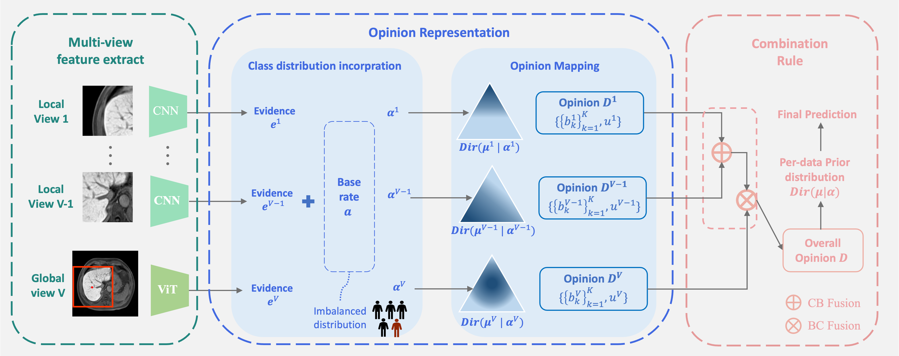
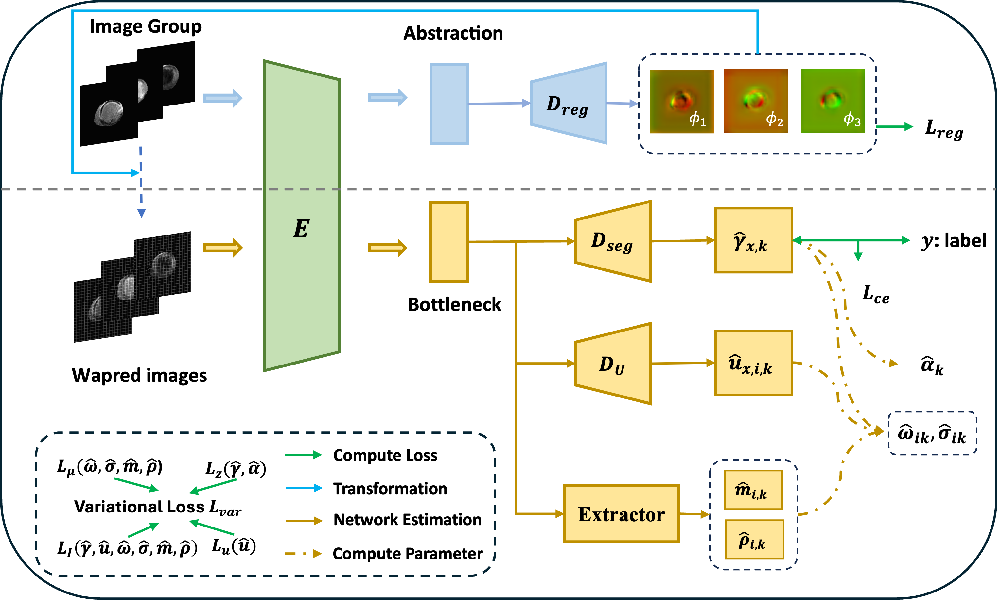
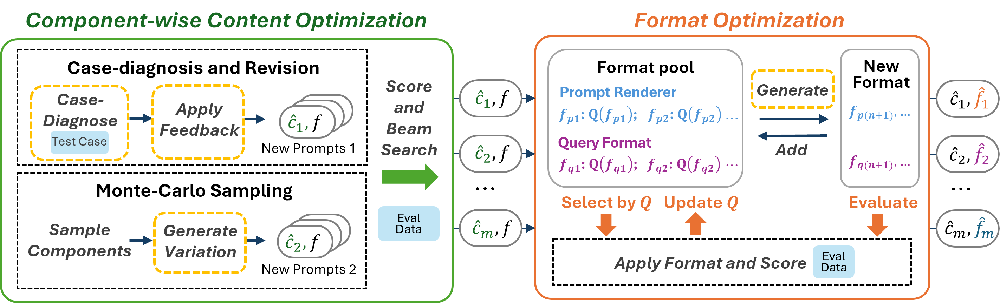
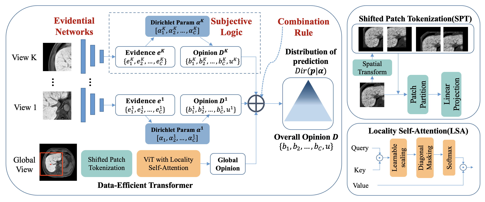

News
- [Jun 18, 2025] One paper was accepted by MICCAI2025 and was selected as Oral presentation.
- [Feb 11, 2025] One paper was accepted by Medical Image Analysis (IF=10.7).
- [Jul 09, 2024] I start my internship at MSRA.
- [Aug 17, 2023] Our MICCAI paper was selected as Oral presentation and nominated for MICCAI Best Paper and Young Scientist Award!
- [May 25, 2023] One paper was accepted by MICCAI2023 (Early Accept, top 14%).
|
Selected Publications
A full list of publications is here. (# indicates equal contribution.)
|
|

|
MERIT: Multi-view Evidential Learning for Reliable and Interpretable Liver Fibrosis Staging
Yuanye Liu#, Zheyao Gao#, Nannan Shi#, Fuping Wu, Yuxin Shi, Qingchao Chen, Xiahai Zhuang
Medical Image Analysis, 2025.
MedIA /
Arxiv /
Code
|
|

|
BayeSMM: Robust Deep Combined Computing Tackling Heavy-tailed distribution in Medical
Yuanye Liu#, Ruoxuan Zhen#, Shangqi Gao, Xinzhe Luo, Xin Gao, Qingchao Chen, Xiahai Zhuang
MICCAI, 2025. (Oral presentation)
|
|

|
Beyond Prompt Content: Enhancing LLM Performance via Content-Format Integrated Prompt Optimization
Yuanye Liu#, Jiahang Xu#, Li Lyna Zhang, Qi Chen, Xuan Feng, Yang Chen, Zhongxin Guo, Yuqing Yang, Cheng Peng
arXiv, 2025.
Arxiv /
Code
|
|

|
A Reliable and Interpretable Framework of Multi-view Learning for Liver Fibrosis Staging
Zheyao Gao#, Yuanye Liu#, Fuping Wu, Nannan Shi, Yuxin Shi, Xiahai Zhuang
MICCAI, 2023. (Oral presentation, nominated for Best Paper and Young Scientist Award)
MICCAI /
Code /
Presentation
|
-
Microsoft Research Asia - Research Intern(July 2024 - Present)
Manager: Jiahang Xu
|
-
Microsoft Star of Tomorrow Award (top ~30%), 2024
-
MICCAl Best Paper and Young Scientist Award finalist, 2023
-
MICCAI STAR award (top ~3%), 2023
-
Excellent Graduate Award of Shanghai (top 5%), 2023
-
Fudan University Undergraduate Scholarships (top ~30%), 2020,2021,2022,2023
|
|
{kind=link}